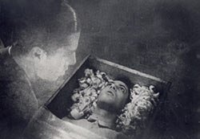

Vampyr, Still (the Coffin)
Carl Theodor Dreyer · 1932 · Film, black and white (frame)
In copyright. Look and learn: shown for study, not for download.
Nicolas de Gunzburg, who plays the lead, was an aristocrat who paid for the film in return for the part, and he acted under the name Julian West to avoid quarrels with his family. Most of the cast were not professional actors, and the whole film was shot on location, many scenes in Courtempierre in France. After his cinematographer Rudolph Maté showed him a shot that came out blurred, Carl Theodor Dreyer had the rest of the film shot through gauze held three feet from the camera. At the Berlin premiere on 6 May 1932 the audience booed.